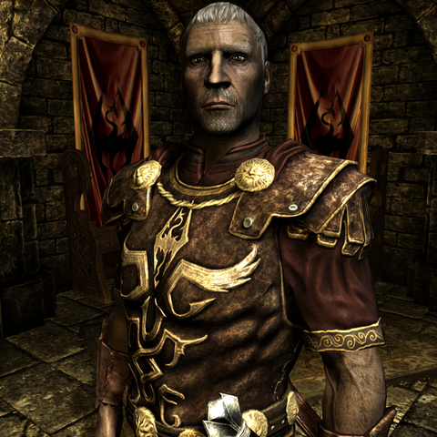
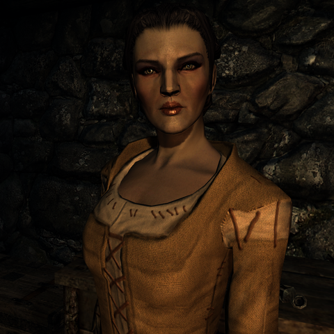
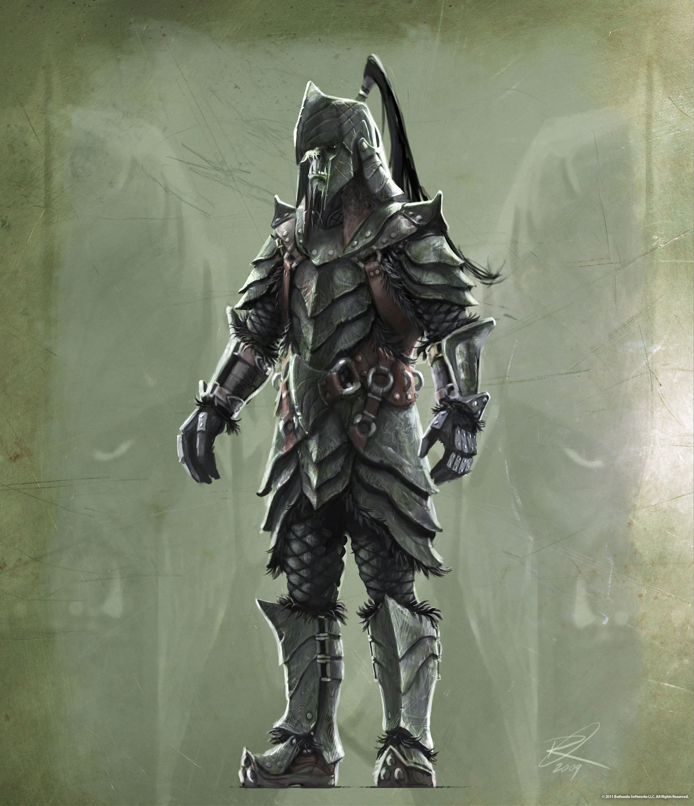
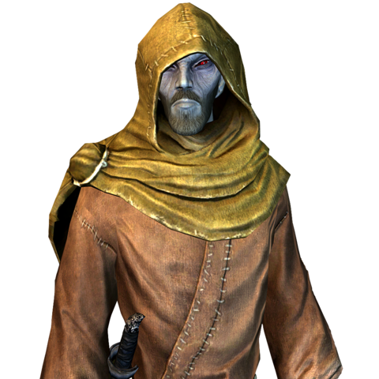
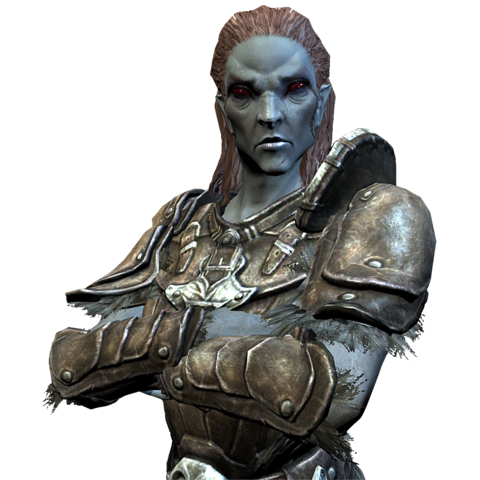
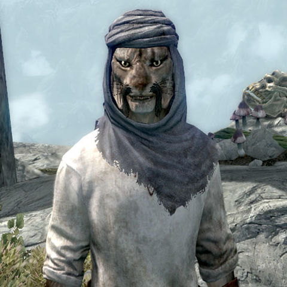
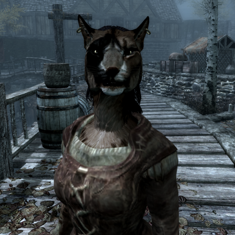
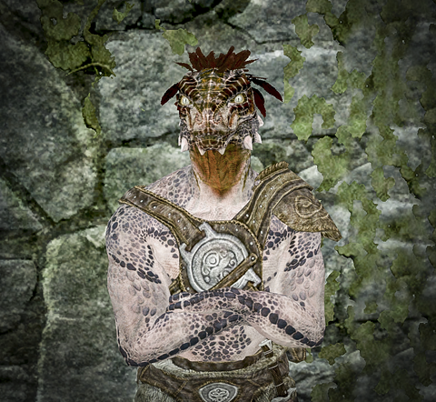
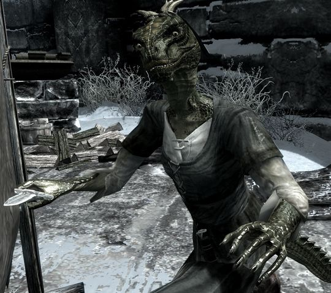

Расы The Elder Scrolls: SkyrimИмперецИмперцы — одна из десяти рас в игре The Elder Scrolls V: Skyrim, доступная для создания персонажа. Это название людей из южного соседа Скайрима — Сиродила, история которых тесно связана с историей нордов. Успех алессианского восстания рабов был обусловлен помимо всего прочего поддержкой армий Скайрима. Вместе войну вели эти два народа и против клана Диренни в Хай Роке. После создания Третьей Империи, Скайрим стал одной из наиболее верных императорской власти провинций, которая проходила вместе с Сиродилом все невзгоды и трудности, такие как война Красного Алмаза, Кризис Обливиона и Великая война, которая, а если точнее то мирный договор её завершивший, пошатнули дружбу между нациями. Повстанцы из числа Братьев Бури добиваются независимости от Империи и её традиций, а Имперский легион и проимперски настроенные норды западного Скайрима противостоят Ульфрику и его подручным. Многие имперцы участвуют в войне, а наибольшее количество сиродильцев традиционно сосредоточено в Хаафингаре и его столице — Солитьюде.   Жители Сиродила, прирождённые дипломаты и торговцы. Они искусны в обращении с оружием и магией. Везде, где можно найти золото, имперцы как-то умудряются найти чуть больше. Способность «Голос императора» позволяет им успокаивать врагов. ОркОрки (орсимеры, отверженный народ) — древний народ, проживающий практически на всей территории Тамриэля. Зеленокожие, с ярко выраженными нижними клыками и заострёнными ушами. У некоторых орков могут быть наросты на лбу. По поводу происхождения орков до сих пор не утихают споры. Основное место расселения: горы Драконьего Хвоста и Ротгарианские горы. Орки знамениты, прежде всего, как отличные воины и непревзойдённые мастера кузнечного дела. Предпочитают тяжёлую броню. Орков чаще всего можно встретить в орочьих крепостях.  С начала Третьей Эры орков всё чаще можно было заметить в цивилизованном обществе, благодаря их службе в Имперском легионе. ДанмерДанмеры — одна из десяти рас в игре The Elder Scrolls V: Skyrim, доступная для создания персонажа. Данмеры или как их знают в Империи «тёмные эльфы» уроженцы сурового Морровинда, пережившего тяжёлые времена в начале Четвёртой эры. Извержение Красной горы и вторжение аргониан едва не погубили этот народ, но они выстояли и продолжили жить в жестоких условиях своего родного края, хотя многие переселились в соседние страны, включая Скайрим. Отношение нордов, особенно восточных, к данмерам, своим извечным соперникам и врагам, менялось в течение исторического времени: от союза (Эбонхартский Пакт) до открытого притеснения (Братья Бури). Хотя верховный король отдал Солстхейм данмерам после Красного года в 4Э 16 в качестве жеста доброй воли, огромное количество тёмных эльфов живёт в Виндхельме под властью ярла-расиста Ульфрика Буревестника.   Данмеры — хорошие маги, отличающиеся также развитым навыком скрытности. Они обладают врождённой сопротивляемостью огню и могут использовать гнев предков, чтобы окружить себя огнём. КаджитКаджиты — одна из десяти рас в игре The Elder Scrolls V: Skyrim, доступная для создания персонажа. Это одна из так называемых зверорас, чьи представители разительно отличаются от остальных обитателей Скайрима. В этой провинции проживает некоторое количество каджитов, чаще всего относящихся к караванам, путешествующих между городами и торгующими с местными жителями у врат столиц владений. Внутрь стен их не пускают, но это не огорчает каджитов. Их родина, Эльсвейр, ныне не существует как единое государство, а разделено на два полузависимых: Анеквину на севере и Пеллетин на юге, признавшихся себя вассалами Третьего Доминиона Альдмери.   Жители провинции Эльсвейр, умные, быстрые и ловкие. Благодаря природной скрытности они становятся отличными ворами. Все каджиты видят в темноте и могут наносить удары когтями в бою без оружия. АргонианинАргониане — одна из десяти рас в игре The Elder Scrolls V: Skyrim, доступная для создания персонажа. Уроженцы далёкого влажного и жаркого Чернотопья, казалось бы абсолютно не предназначены для холодного климата Скайрима рептилии являются одними из наиболее интересных обитателей Отчизны. Сами себя называют «саксхлил». Их общины есть и на востоке провинции, где власть в руках националистически настроенных ярлов, поддерживающих откровенного расиста Ульфрика Буревестника, провозгласившего лозунг «Скайрим для нордов!». В условиях гражданской войны они продолжают жить и трудиться, как правило в доках, ввиду своей любви к водной среде.   Физиология аргониан позволяет им дышать под водой, что возможно за счёт наличия небольших жабр. Более того, эти рептилии успешно сопротивляются множеству болезней, но, в отличие от прошлых игр, лишились сопротивления ядам. Также аргониане могут лечить себя раз в сутки. Среди представителей этой расы есть талантливые маги и воры. |